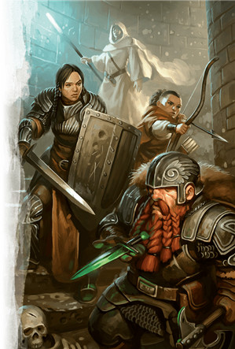
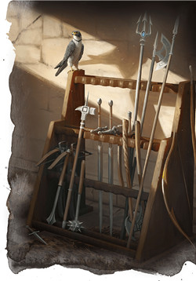
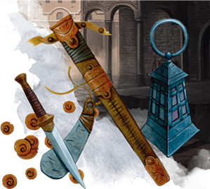

Le guerrier D&D 5 pour les nuls
Votre guerrier est un bagarreur qui va devenir un combattant hors pair. Votre pouvoir vient de vous-même ; il ne dépend pas de la puissance ésotérique de la magie, des caprices des dieux ou des cruelles exigences d'un protecteur d'Outremonde. Le seul serment que vous avez prêté est avec le bras qui brandit votre épée. Vous êtes autonome.
Au niveau de la thématique, le guerrier est très flexible. Il peut aussi bien être un escroc, un chevalier ou un bagarreur des rues. Cela peut être vu comme une aubaine pour certains, mais peut aussi conduire le guerrier à être considéré comme un personnage ennuyeux, car peu typé. En réalité, le guerrier est tout sauf ennuyeux, et cette aide de jeu va vous présenter les bases de cette classe sur les 5 premiers niveaux.
Créer votre guerrier
Sans aller jusqu'à parler d'optimisation, la première étape pour bien jouer votre classe est de construire votre personnage efficacement.
- Choisissez votre race. N'importe laquelle peut faire un bon guerrier, mais préférez celles qui améliorent vos valeurs de Force, de Dextérité et/ou de Constitution. Les nains des montagnes font d'excellents guerriers de corps à corps grâce à leurs bonus de Force et de Constitution, tout comme les demi-orcs qui en plus possèdent les capacités Endurance implacable et Attaques sauvages. Les elfes font aussi de bons guerriers si vous voulez utiliser des arcs ou une arme légère dans chaque main, grâce à leurs bonus de Dextérité.
- Choisissez la classe de guerrier (évidemment !).
- Choisissez des compétences qui correspondent à ce que vous voulez que soit votre personnage. Les compétences qui jouent sur vos points forts sont utiles, mais pensez aussi à compenser certaines de vos faiblesses afin d'obtenir un personnage un peu plus équilibré.
Quel type de guerrier ?
Pensez ensuite au rôle que vous voulez remplir dans le groupe, et regardons cela plus en détail. En tant que guerrier, votre force est évidente : vous êtes fait pour combattre ! Mais contrairement à d'autres classes qui peuvent choisir de se spécialiser dans l'exploration ou le soutien, vous avez principalement trois chemins possibles lors de la construction de votre personnage, selon le rôle que vous voulez assumer en combat : offensif, défensif ou protecteur ?
Offensif
En tant que guerrier offensif, vous vous concentrerez sur l'élimination des ennemis en vous basant sur une force rapide et écrasante.
- Choisissez le style de combat Arme à deux mains ou Combat à deux armes.
- Si vous avez choisi Arme à deux mains, placez votre valeur de caractéristique la plus élevée en Force. Si vous avez choisi Combat à deux armes, placez votre valeur de caractéristique la plus élevée en Dextérité. Mettez votre deuxième valeur de caractéristique la plus élevée en Constitution, et les autres comme vous le souhaitez (si vous envisagez de jouer un chevalier occulte qui lance des sorts à partir du niveau 3, mettez votre deuxième valeur de caractéristique la plus élevée en Intelligence au lieu de Constitution).
- Choisissez un historique qui colle avec le concept de votre personnage.
- Pour votre équipement, choisissez :
- une cotte de mailles
- une arme de guerre à deux mains comme une épée à deux mains ou une hache à deux mains, et un bouclier (lorsque vous utiliserez les hachettes indiquées ci-dessous) si vous avez choisi le style Arme à deux mains ; ou deux épées ou deux cimeterres si vous avez choisi le style Combat à deux armes
- deux hachettes si vous avez choisi le style Arme à deux mains (pour profiter de votre bonus de Force au lancer) ; ou une arbalète légère et 20 carreaux si vous avez choisi le style Combat à deux armes (pour profiter de votre bonus de Dextérité)
- un sac d'exploration souterraine ou un sac d'explorateur, selon le concept de personnage.
Si vous voulez être un archer offensif au lieu d'un guerrier au corps à corps, faites les mêmes choix que si vous construisiez un guerrier avec le style Combat à deux armes, mais choisissez le style de combat Archerie à la place et choisissez une armure de cuir, un arc long et 20 flèches au lieu de la cotte de mailles.
Défensif
Un guerrier défensif sacrifie un peu des dégâts bruts du guerrier offensif pour obtenir un peu plus d'armure.
- Choisissez le style de combat Défense ou Duel.
- Placez votre valeur de caractéristique la plus élevée en Force, votre deuxième meilleure valeur en Constitution, et les autres comme vous le souhaitez (si vous envisagez de jouer un chevalier occulte qui lance des sorts à partir du niveau 3, mettez votre deuxième valeur de caractéristique la plus élevée en Intelligence au lieu de Constitution).
- Choisissez un historique qui colle avec le concept de votre personnage.
- Pour votre équipement, choisissez :
- une cotte de mailles
- une arme de guerre à une main comme une hache d'armes, une épée longue, une morgenstern ou une rapière, et un bouclier.
- deux hachettes
- un sac d'exploration souterraine ou un sac d'explorateur, selon le concept de personnage.
Un guerrier défensif joue de façon similaire à un offensif, surtout au niveau 1. Vous aurez toujours envie d'être au corps à corps avec l'ennemi si cela est possible, en utilisant votre masse pour rester en vie pendant que vous tranchez l'ennemi. À mesure que vous gagnez des niveaux et de nouvelles capacités de classe, les styles offensifs et défensifs commenceront à diverger.
Protecteur
Un protecteur repose à la fois sur l'attaque et la défense pour protéger ses alliés.
- Choisissez le style de combat Protection.
- Placez votre valeur de caractéristique la plus élevée en Constitution, votre deuxième meilleure valeur en Force, et les autres comme vous le souhaitez (si vous envisagez de jouer un chevalier occulte en tant que protecteur, mettez votre troisième valeur de caractéristique la plus élevée en Intelligence).
- Choisissez un historique qui colle avec le concept de votre personnage.
- Pour votre équipement, choisissez :
- une cotte de mailles
- une arme de guerre à une main comme une hache d'armes, une épée longue, une morgenstern ou une rapière, et un bouclier.
- deux hachettes
- un sac d'exploration souterraine ou un sac d'explorateur, selon le concept de personnage.
Au niveau 1, le style de combat Protection est le plus important en tant que protecteur, car il vous permet d'utiliser votre réaction pour empêcher vos ennemis de frapper vos alliés. Cela peut encourager les monstres à vous attaquer en premier, puisque vous ne pouvez pas utiliser votre capacité de protection pour vous défendre vous-même, et c'est exactement ce que vous voulez ; votre armure et votre Constitution vous aideront à mieux résister aux coups que ne le ferait la plupart de vos alliés.
Se battre comme un guerrier
Pour les trois premiers niveaux de votre carrière de guerrier, votre style de jeu sera à peu près le même quel que soit le type de rôle que vous voulez jouer dans le groupe. Si vous portez une armure intermédiaire ou lourde et brandissez une arme de corps à corps, vous aurez envie d'entrer dans la mêlée et d'y rester jusqu'à la fin du combat. Même si vous êtes sur le point de mourir, ne vous enfuyez pas, à moins que le groupe ne décide de battre en retraite. Vous êtes plus utile en infligeant des dégâts et en prenant des coups qu'en quittant le combat pour vous faire soigner.
Au niveau 1, vous bénéficiez de la capacité Second souffle, qui vous permet de soigner une quantité de dégâts assez importante (surtout aux bas niveaux) par une action bonus. À moins que vous ne choisissiez le style Combat à deux armes, vous n'avez probablement rien d'autre à faire avec votre action bonus, donc utilisez là rapidement et souvent, d'autant plus qu'elle se recharge après un repos court. Et même si vous êtes un guerrier avec Combat à deux armes, utilisez cette capacité pour vous maintenir en vie si la situation devient critique.
Au niveau 2, vous gagnez votre capacité de classe la plus puissante : Fougue. Alors que son utilisation la plus évidente est de vous accorder une deuxième attaque (ou plus, une fois que vous gagnez Attaque supplémentaire), vous pouvez aussi utiliser votre action pour faire d'autres choses, comme par exemple :
- Lancer un sort, si vous choisissez chevalier occulte au niveau 3 ou si vous vous multiclassez avec une classe qui lance des sorts. Vous pouvez ainsi lancer deux sorts dans un même tour.
- Vous déplacer de nouveau pour atteindre un objectif ou prendre l'action Se désengager pour battre en retraite.
- Effectuer une puissante attaque et prendre ensuite l'action Esquiver pour imposer un désavantage à toutes les attaques contre vous jusqu'à votre prochain tour si vous êtes entouré par de nombreux ennemis.
- Prendre l'action Aider si un allié à proximité doit absolument toucher lors de sa prochaine attaque pour une raison stratégique importante.
- Si vous participez à une mission discrète, vous pouvez sortir de votre cachette, utiliser votre action pour attaquer une sentinelle, puis fuir et utiliser Fougue pour prendre l'action Se cacher. Les roublards le feront mieux que vous, mais cela vise juste à montrer qu'un guerrier peut faire autre chose que d'attaquer avec Fougue.
- Si vous tuez un ennemi et que vous ne savez plus vraiment quoi faire ensuite, vous pouvez utiliser Se tenir prêt pour préparer une attaque contre le prochain ennemi qui sera à votre portée.
- Utilisez un objet. Boire une potion nécessite une action, ce qui peut frustrer certains joueurs. Si vous avez désespérément besoin de vous guérir et que vous avez déjà utilisé votre Second souffle, utiliser Fougue pour boire une potion n'est pas une mauvaise idée.
Au niveau 3, vous pouvez choisir votre sous-classe. C'est à ce moment-là que le rôle de votre personnage dans le groupe commence vraiment à se faire sentir. Vous pouvez choisir entre champion, maître de guerre et chevalier occulte. Un guerrier offensif ou défensif peut choisir n'importe laquelle de ces trois sous-classes. Un protecteur devrait par contre choisir entre maître de guerre et chevalier occulte, car la profondeur tactique de ces sous-classes permet de mieux protéger vos compagnons.
Offensif
Si vous avez choisi l'archétype champion, votre capacité Critique améliorée au niveau 3 est une bonne capacité passive qui agit bien en synergie avec Attaques sauvages d'un demi-orc. Si vous avez choisi maître de guerre, vous devriez apprendre les manœuvres Feinte, Balayage et Renversement. Si vous avez choisi chevalier occulte, vous devriez apprendre les sorts mineurs trait de feu et lame aux flammes vertes, ainsi que les sorts mains brûlantes, projectile magique et vague tonnante.
Au niveau 4, vous devriez augmenter votre Force de +2. Si vous avez choisi le style Arme à deux mains, vous pouvez plutôt prendre le don Maître des armes à deux mains, l'un des plus puissants du jeu. Si vous avez choisi le style Combat à deux armes, vous pouvez au lieu de cela diversifier votre jeu en choisissant le don Combattant à deux armes. Un chevalier occulte devrait apprendre le sort orbe chromatique si vous avez besoin d'options plus offensives (mais n'oubliez pas que sa composante matérielle est coûteuse) ou le sort bouclier si vous avez besoin d'un boost défensif.
Au niveau 5, vous gagnez une attaque supplémentaire, ce qui double les dégâts que vous infligez.
Défensif
Si vous avez choisi l'archétype champion, n'oubliez pas que votre caractéristique Critique améliorée vous permet désormais de faire un coup critique sur un jet de 19 ou 20. Si vous avez choisi maître de guerre, vous devriez apprendre les manœuvres Botte secrète, Repousser et Riposte. Si vous avez choisi chevalier occulte, vous devriez apprendre les sorts mineurs lame aux flammes vertes et poigne électrique et les sorts secousse sismique, mains brûlantes et bouclier.
Au niveau 4, vous devriez augmenter votre Constitution de +2. Si vous portez une armure lourde, cependant, vous pouvez prendre le don Spécialiste des armures lourdes afin d'améliorer votre endurance au combat. En outre, un chevalier occulte devrait apprendre les sorts protection contre le mal et le bien ou projectile magique si vous pensez manquer de pouvoir offensif.
Au niveau 5, vous gagnez Attaque supplémentaire, ce qui double les dégâts que vous infligez.
Protecteur
Si vous avez choisi l'archétype maître de guerre, vous devez apprendre les manœuvres Frappe dirigée, Provocation et Attaque menaçante.
- Frappe dirigée est une manœuvre très puissante pour un protecteur car, même si vous devez abandonner votre attaque, vous permettez à un personnage plus focalisé sur les dégâts, comme un roublard, de toucher un ennemi avec sa capacité offensive la plus puissante, comme Attaque sournoise.
- Provocation vous donne une autre capacité qui s'ajoute à votre style de combat de Protection. Cela enlève de la pression à vos alliés en faisant de vous une option beaucoup plus attrayante à attaquer.
- Attaque menaçante vous donne la capacité d'effrayer les ennemis, ce qui donne un désavantage à leurs attaques tant qu'ils peuvent vous voir. Il est préférable d'utiliser cette manœuvre à bas niveau, puis de la remplacer par une autre manœuvre plus tard, car de plus en plus de créatures deviennent immunisées contre la peur.
Si vous avez choisi chevalier occulte, vous devriez apprendre les sorts mineurs lame aux flammes vertes et protection contre les armes, ainsi que les sorts projectile magique, bouclier et vague tonnante.
- Vague tonnante est un sort important car il vous permet de contrôler le champ de bataille, en poussant et en tirant les ennemis pour faciliter la défense de vos alliés.
- Lame aux flammes vertes et projectile magique vous octroient un peu plus de dégâts lorsque vous avez juste besoin de mettre fin à un combat.
- Bouclier est comme un bouton de panique que vous pouvez utiliser pour survivre à une attaque qui pourrait vous tuer, mais soyez conscient que si vous êtes protégé jusqu'au prochain tour, les ennemis pourraient commencer à voir vos alliés comme des cibles plus attrayantes.
Au niveau 4, vous devriez prendre le don Sentinelle, ce qui empêchera vos ennemis de vous passer devant pour aller menacer vos alliés.
Au niveau 5, vous gagnez Attaque supplémentaire, ce qui double les dégâts que vous infligez. Cependant, au lieu d'utiliser Attaque supplémentaire pour faire une attaque, gardez à l'esprit que vous pouvez également l'utiliser pour agripper une créature.
Personnaliser son guerrier
Ce guide se concentre sur la construction de votre personnage et explique comment cela peut vous aider en combat. Mais n'oubliez pas que si une bonne conception du personnage peut vous faire exceller au combat, les choix les plus importants à D&D sont ceux que vous faites en jouant : quel ennemi attaquer, essayer ou non d'intimider ou de flatter un noble indiscipliné, ou tout simplement la personnalité de votre personnage.
Suivre ce guide à la lettre est un bon point de départ, mais n'hésitez pas à personnaliser votre personnage. Choisissez un trait de personnalité fort et amusez-vous en jouant un combattant avide ou un combattant amoureux par exemple. Ensuite, même si vos choix mécaniques sont assez simples, il y aura toujours quelque chose qui fera que votre guerrier est unique.
Allez tuer des dragons maintenant !
Basé sur un article de James Haeck, traduit par blueace